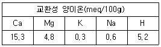
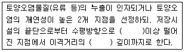
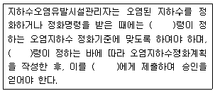

토양환경기사 (2009-08-30 기출문제)
1과목: 토양학개론
1. 토양생성작용 중 laterite화 작용에 관한 설명으로 틀린 것은?
- 보통 고온다습한 열대 기후 조건 하에서 일어난다.
- 염기류나 규산이 용탈되고 철 및 알루미늄의 산화물이 잔류해서 상대적으로 많아지는 과정을 말한다.
- SiO2/Al2O3 또는 SIO2/Fe2O3의 비가 낮은 토양이 생성된다.
- 철과 알루미늄의 집적물을 glei라 하며 표층에 누출되어 점성화된 것을 laterite 라고 한다.
(정답률: 알수없음)

2. 대기 중에 있는 공기 성분 조성과 토양 공극 중 기체성분(토양공기)조성의 차이를 가장 적절하게 설명한 것은? (단, 조성 부피(%) 기준)
- 대기 중 공기와 비교하였을 때 토양 공기 중 탄산가스 조성은 낮다.
- 대기 중 공기와 비교하였을 때 토양 공기 중 산소 조성은 낮고 탄산가스 조성은 높다.
- 대기 중 공기와 비교하였을 때 토양 공기 중 산소와 탄산가스 조성은 높다.
- 대기 중 공기와 비교하였을 때 토양 공기 중 메탄조성은 높으나 탄산가스 조성은 낮다.
(정답률: 알수없음)
3. 흙 속에서 모관수를 지지하는 힘을 모관포텐셜이라 한다. 모관포텐셜에 관한 설명으로 틀린 것은?
- 입경이 작을수록 모관포텐셜이 낮아진다.
- 온도가 낮을수록 모관포텐셜이 낮아진다.
- 함수비가 낮을수록 모관포텐셜이 낮아진다.
- 간극이 작을수록 모관포텐셜이 낮아진다.
(정답률: 알수없음)
4. 다음은 토양단면(층위)을 설명한 내용이다. 틀린 것은?
- 겉표면의 유기물층을 걷어내면 용탈층이 나타난다.
- 암반층 바로 위에는 모재층이다.
- 토양생성작용을 거의 받지 않는 모재층은 집적층과 성토층으로 나누어 진다.
- B층은 풍화작용이 활발하게 진행되고 토양의 구조가 뚜렷하게 구분되는 것이 특징이다.
(정답률: 알수없음)
5. 모래에 지하수를 장기간 중력 배수시켰을 때, 모래의 비산출률이 0.15 이고 모래의 공극율이 0.4라면 비보유율은?
- 0.06
- 0.55
- 0.25
- 0.38
(정답률: 알수없음)
6. 다음 중 토양 오염의 특징으로 적합하지 않은 것은?
- 오염경로의 다양성
- 오염영향의 국지성
- 피해발현의 완만성
- 오염인지의 용이성
(정답률: 알수없음)
7. 토양내 유기물의 농도가 50mg/kg이었다. 1시간 후 유기물 농도가 40mg/kg 이었다면 3시간 후의 유기물 농토(mg/kg)는? (단, 유기물의 분해는 토양에 존재하는 효소의 양에만 의존한다. 0차 반응 기준)
- 10
- 15
- 20
- 25
(정답률: 알수없음)
8. 토양 오염물질 중 BTEX를 구성하는 성분이 아닌 것은?
- 벤젠
- 톨루엔
- 에틸렌
- 자일렌
(정답률: 알수없음)
9. 토양내의 미생물 중 세균에 비해 일반적으로 내산성이 강하고 산성토양에서 유기물 분해의 중요한 작용을 담당하며 토양 중에서 리그닌을 주로 분해하는 것은?
- 방선균
- 세균
- 사상균
- 조류
(정답률: 알수없음)
10. 간극비(e)를 알맞게 나타낸 것은?
- 간극내 물의 무게/흙 입자의 무게
- 간극내 물의 무게/흙 전체의 무게
- 간극의 부피/흙 입자의 부피
- 간극의 부피/흙 전체의 부피
(정답률: 알수없음)
11. 저유계수(Storativity) 계산 수식으로 맞는 것은?
- 배출된 지하루량(체적)/(면적×수두변화)
- (공극률×배출된 지하수량(체적))/(면적×수두변화)
- (면적×수두변화)/배출된 지하수량(체적)
- (면적×수두변화)/(공극률×배출된 지하수량(체적))
(정답률: 알수없음)
12. 공동대사작용으로 호기성 환경에서 트리클로로에틸렌을 분해시킬 때 이용되는 화합물로 가장 적절한 것은?
- 염소
- 톨루엔
- 할로겐 화합물
- 과산화수소
(정답률: 알수없음)
13. 다음 중 1:1형 광물로서 카올리나이트(kaolinite)와 같은 Si층 사이에 물 분자층 하나가 끼어 있어 기저면 간격이 넓어져 있으며 이를 가열하면 물이 비가역적으로 빠져 나가는 것은?
- 몬트모리올라이트(montmorillonite)
- 카올린(kaolin)
- 일라이트(illite)
- 할로이사이트(halloysite)
(정답률: 알수없음)
14. 토양 중 교환성 양이온이 아래 예와 같을 때, 염기포화도(%)는?

- 20%
- 40%
- 60%
- 80%
(정답률: 알수없음)
15. 전지구적인 물 분포 부피비율 크기로 맞는 것은?
- 빙하, 만년설＞지하수(지하 약 4km)＞강＞토양수분
- 빙하, 만년설＞지하수(지하 약 4km)＞토양수분＞강
- 지하수(지하 약 4km)＞빙하, 만년설＞강＞토양수분
- 지하수(지하 약 4km)＞빙하, 만년설＞토양수분＞강
(정답률: 알수없음)
16. 점토나 실트로 구성된 토적물이나 셰일과 같은 암석으로 구성된 지층으로 지하수는 다량 포함하고 있으나 투수성이 충분하지 않아 경제적 지하수 개발을 할 수 없는 지층은?
- 지연 대수층
- 피압 대수층
- 비산출 대수층
- 비유동 대수층
(정답률: 알수없음)
17. 포화대의 수리지질학적인 특성을 지하수의 흐름특성과 저유특성으로 대별할 때 흐름특성으로 중요한 인자는?
- 공극률
- 비산출률
- 수리전도도
- 비저유계수
(정답률: 알수없음)
18. 토양의 체분석 결과 D10=0.⑤mm, D20=0.15mm, D30=0.75mm 으로 나타났다. 이 토양의 곡률계수(Cz)는? (단, 입도 분포 곡석 기준)
- 0.2
- 0.4
- 0.6
- 0.8
(정답률: 알수없음)
19. 다음은 수은(Hg)에 대한 설명이다. 틀린 것은?
- 온도계, 압력계 등과 같은 측정기나 제어기에 많이 이용된다.
- 수은 화합물과 토양 성분과의 상호작용은 거의 없어 용출로 인한 오염이 발생된다.
- 수은 독성은 그 화합물의 종류에 따라 크게 다르다.
- 토양 중 수은이 어떤 반응을 하는가는 주로 그것에 존재하는 수은의 형태에 따라 규정된다.
(정답률: 알수없음)
20. 토양오염은 오염물질의 특이성에 따라 다르게 나타난다. 유기오염물질의 특성 인자와 가장 거리가 먼 것은?
- 증기압
- 용해도적
- 옥탄올/물 분배계수
- 분해상수
(정답률: 알수없음)
2과목: 토양 및 지하수 오염조사기술
21. 토양시료의 분석에 필요한 2N황산용액을 조제하고자 한다. 가장 적절한 방법은? (단, 95% 황산이다.)
- 황산 60mℓ를 물 1ℓ중에 섞으면서 천천히 넣는다.
- 황산 120mℓ를 물 1ℓ중에 섞으면서 천천히 넣는다.
- 황산 180mℓ를 물 1ℓ중에 섞으면서 천천히 넣는다.
- 황산 240mℓ를 물 1ℓ중에 섞으면서 천천히 넣는다.
(정답률: 알수없음)
22. 온수라 함은 별도의 온도에 대한 표시가 없는 경우 몇 ℃범위를 말하는가?
- 40 - 50℃
- 50 - 60℃
- 60 - 70℃
- 70 - 80℃
(정답률: 알수없음)
23. 다음은 지상저장시설에 대한 토양오염시료 채취지점의 설명이다. 각 괄호 안에 들어 갈 내용으로 순서대로 나타낸 것은? (단, 토양오염유발시설지역, 부지내)

- 2.0m, 1.5배
- 1.0m, 1.5배
- 2.0m, 2.0배
- 1.0m, 2.0배
(정답률: 알수없음)
24. 다음 중 중금속을 분석하는데 사용되는 흡광광도법의 연결이 맞는 것은?
- 시안 - 디페닐 카르바지드법
- 구리 - 디에틸디티오카르바인산법
- 6가 크롬 - 디메틸글리옥싱법
- 비소 - 피리딘ㆍ피라졸론법
(정답률: 알수없음)
25. 수분함량 측정시 1⑤ - 110℃ 건조기 안에서의 토양 건조시간은? (단, 시료와 증발접시를 수욕상에서 수분을 거의 날려 보낸 후 건조기 안에서의 건조시간 기준)
- 1시간
- 2시간
- 3시간
- 4시간
(정답률: 알수없음)
26. 001N의 NaOH 용액의 pH는?
- 9
- 10
- 11
- 12
(정답률: 알수없음)
27. 저장물질이 없는 누출검사대상시서의 누출검사방법 중 가압시험법에서 누출 여부의 판정기준으로 가장 적절한 것은?
- 안정된 압력 확인 후 10분 동안 측정된 압력강하가 안정된 시험압력의 10%를 초과할 경우에는 불합격
- 안정된 압력 확인 후 15분 동안 측정된 압력강하가 안정된 시험압력의 10%를 초과할 경우에는 불합격
- 안정된 압력 확인 후 30분 동안 측정된 압력강하가 안정된 시험압력의 10%를 초과할 경우에는 불합격
- 안정된 압력 확인 후 50분 동안 측정된 압력강하가 안정된 시험압력의 10%를 초과할 경우에는 불합격
(정답률: 알수없음)
28. 투과 퍼센트가 40%일 때의 흡광도는?
- 0.398
- 0.331
- 0.276
- 0.245
(정답률: 알수없음)
29. 다음의 용어 정의 중 틀린 것은?
- 감압 또는 진공이라 함은 통상 15mmH2O 이하를 말한다.
- 가스체의 농도는 표준상태(-℃, 1기압, 상대습도 0%)로 환산 표시한다.
- 제반시험 조작은 따로 규정이 없는 한 상온에서 실시하고 조작직후 그 결과를 관찰하는 것으로 한다.
- “함량으로 될 때까지 건조한다.”라 함은 같은 조건에서 1시간 더 건조할 때 전후 무게차가 g당 0.3mg이하일 때를 말한다.
(정답률: 알수없음)
30. 가스크로마토그래피법으로 다음 항목을 분석할 때 사용되는 검출기로 틀린 것은?
- 페놀류-불꽃이온화검출기
- PC8 - 전해전도검출기
- 유기인 - 질소ㆍ인 검출기
- TPH - 전자포획형/질량분석검출기
(정답률: 알수없음)
31. 다음 중 가스크로마토그래프법의 정량법이 아닌 것은?
- 넓이 백분율법
- 표준 첨가법
- 내부 표준법
- 피검설분추가법
(정답률: 알수없음)
32. 토양에 함유되어 있는 중금속 성분을 분석하기 위하여 시료를 조제할 때 사용되는 표준체가 다른 성분은?
- 납
- 구리
- 아연
- 비소
(정답률: 알수없음)
33. 가스크로마토그래피로 BTEX룰 정량하는 방법에 대한 설명으로 틀린 것은?
- 검출기는 불꽃이온화검출기(FID), 광이온검출기(PID)또는 GC/MS를 사용한다.
- 시료도입부 온도는 200℃를 사용한다.
- 트랩은 Tenax, Carbopack, OV-1/Tenax/Silicagel/Charcoal 또는 동등 이상 성능을 가진 것을 사용한다.
- BTEX의 유효측정농도는 0.⑤mg/kg 이상으로 한다.
(정답률: 알수없음)
34. 흡광광도법을 적용하여 토양 중 구리(Gu)를 측정할 때에 관한 설명으로 틀린 것은?
- 시료 중에 시안화합물이 함유된 경우에는 수산화나트륨을 첨가하여 침강, 제거한 루 분석한다.
- Bi가 구리의 양보다 2배 이상 존재할 경우에는 황색을 나타내어 분석을 방해한다.
- 초산부틸 대신 이용 가능한 추출용매는 사염화탄소, 클로로포름, 벤젠 등이다.
- 무수황산나트륨 대신 건조여지를 사용하여 여과하여도 된다.
(정답률: 알수없음)
35. 원자흡광광도법을 사용한 아연 분석에 대한 내용으로 틀린 것은?
- 공랭식 냉각관 및 반송형 반응용기 사용
- 정량범위는 사용하는 장치 및 측정조건에 따라 다르지만 213.9nm에서 0.⑤~2.0mg/L 범위
- 가연성가스는 아세틸렌, 조연성가스는 공기를 사용
- 유효측정농도는 0.17mg/kg 이상
(정답률: 알수없음)
36. 가스크로마토그래피에 사용되는 검출기에 대한 설명 중 틀린 것은?
- 수소불꽃이온화검출기는 수소연소노즐, 이온수집기, 직류전압 변환회로 강도조절부, 신호감쇄부, 본체 등으로 구성된다.
- 전자포획형 검출기는 방사선 동위원소로부터 방출되는 β선을 이용한다.
- 불꽃광도형 검출기는 유기할로겐 화합물, 니트로화합물 및 유기금속화합물을 선택적으로 검출한다.
- 알칼리열 이온화검출기는 수소불꽃이온화검출기에 알칼리 또는 알칼리토류 금속염의 튜브를 부착한 것이다.
(정답률: 알수없음)
37. 일반지역의 토양오염도 검사를 위해 채취한 시료 보관에 대한 내용 중 틀린 것은?
- 채취한 토양시료가 불소 시험용인 경우는 폴리에틸렌봉지에 넣어 보관한다.
- 채취한 토양시료가 유기물질 시험용인 경우는 폴리에틸렌봉지에 넣어 보관한다.
- 채취한 토양시료가 수은 시험용 시료인 경우는 입구가 넓은 유리병에 넣어 보관한다.
- 채취한 토양시료가 시안 시험용 시료인 경우는 입구가 넓은 유리병에 넣어 보관한다.
(정답률: 알수없음)
38. 불소 분석 방법에 관한 설명 중 틀린 것은? (단, 흡광광도법 기준)
- 다량의 염소이온이 함유되어 있을 경우 과량의 Ag+이온을 첨가한다.
- 유효측정농도는 0.⑤mg/kg 이상으로 한다.
- 불소이온과 지르코니움(zirconium)이온 사이의 반응속도는 반응혼합물의 산도에 따라 달라진다.
- 불소가 진홍색의 지르코니움(zirconium)=발색 시약과의 반응으로 무색의 음이온 복합체(ZrE62-)를 형성한다.
(정답률: 알수없음)
39. 다음은 일반지역의 토양시료채취지점 선정방법이다. 틀린 것은?
- 농경지의 경우는 대상지역 내에서 지그재그형으로 5 - 10개 지점을 선정한다.
- 농경지가 아닌 기타지역의 경우는 대상지역의 중심이 되는 1개 지점과 주변 4방위의 5 - 10m 거리에 있는 1개 지점씩 총 5개 지점을 선정한다.
- 카드뮴, 납 시험용 시료는 농경지인 경우는 대상지역내 대표치를 구할 수 있는 5개 지점, 기타지역은 2개 지점이상을 선정한다.
- BTEX 및 석유계총탄화수소시험용 시료는 농경지 또는 기타지역의 구분에 관계없이 대상지역에서 대표치를 구할 수 있는 1개 지점을 선정한다.
(정답률: 알수없음)
40. 구리를 유도결합플라스마 발광광도법으로 정량할 때 측정 파장과 유효측정농도 범위로 맞는 것은?
- 324.75nm, 0.006-50 μg/g
- 324.75nm, 0.2-4.0 μg/g
- 245.34nm, 0.002-0.03 μg/g
- 245.34nm, 0.2-5.0 μg/g
(정답률: 알수없음)
3과목: 토양 및 지하수 오염정화 기술
41. Air Sparging 적용에 유리한 조건으로 틀린 것은?
- 토양의 종류 : 사질토, 균질토
- 지하수면까지의 깊이 : 1.5m 이상
- 오염물질의 호기성 생분해능 : 높음
- 오염물질의 용해도 : 높음
(정답률: 알수없음)
42. 토양의 열처리 기술 중 열스크루 공정에 대한 설명 중 틀린 것은?
- 열스크루 장치는 장치 용적에 비해 열전달 표면적이 비교적 작다.
- 열스크루 공정의 열전달 유체는 직접연소 또는 전기적 장치에 의해서 가열된다.
- 열스크루 공정은 고형물의 온도가 최대 허용 가능한 열전달 유체의 온도에 의해 제한된다.
- 열스크루 장치는 같은 용량의 장치에 비해 장치가 작고 열전달효율이 높다.
(정답률: 알수없음)
43. TCE(Trichloroethylene)으로 오염된 지하수를 오존으로 처리하고자 한다. 처리대상 지하수로 예비실험을 한 결과 1.4mg/L-mib의 오존으로 1시간 처리 시 환경기준에 적합한 제거율을 보였다. 지하수 오염농도가 150mg/L이고 처리해야 할 지하수의 유량이 1140 L/min일 경우 환경기준에 적합하도록 처리하기 위한 최소 오존 필요량은?
- 약 104 kg/day
- 약 114 kg/day
- 약 123 kg/day
- 약 148 kg/day
(정답률: 알수없음)
44. 중금속으로 오염된 토양을 pH가 낮은 산용액을 이용하여, 중금속을 토양으로부터 분리시켜 처리하는 토양복원 방법은 다음 중 어떤 방법으로 분류할 수 있는가?
- 토양유리화방법(Vitrification)
- 토양세척법(Soil washing)
- 토양경작법(Soil landfarming)
- 토양증기추출법(Soil vapor extraction)
(정답률: 알수없음)
45. 다음 토양세척공정의 장단점 중 맞는 것은?
- 외부완경의 조건변화에 대한 영향이 큰 공정이다.
- 처리 효율은 높으나 적용 가능한 오염물의 범위가 좁다.
- 자체적인 조건조절이 가능한 개방혀이 공정이다.
- 단시간 내에 오염토양의 부피를 감소시킬 수 있다.
(정답률: 알수없음)
46. 디젤로 오염된 오염 부지(20m×10m×5m)의 토양 평균공극률이 0.3 이다. 바이오벤팅법을 이용하여 오염부지를 정화하는 경우, 오염 부지 공극체적(pore volume)의 100배의 공기가 필요한 것으로 조사되었다. 오염부지에 주입하는 공기량이 200m3/일 이라면, 바이오벤팅법을 이용하여 복원하는데 걸리는 운전시간은? (단, 지속적인 주입으로 가정할 것)
- 30일
- 60일
- 90일
- 120일
(정답률: 알수없음)
47. 토양증기추출법(soil vapor extraction)의 원리, 적용 및 제약조건에 대해 잘못 기술한 것은?
- 토양 내부로 공기를 주입하므로 Heevy oil, 다이옥신 및 PCBs의 처리에 매우 효과적인 방법이다.
- 미세토양이나 수분함량이 높은 토양의 경우 증기압을 높이기 위한 추가 비용 부담이 증가 된다.
- 유기물의 함량이 높은 토양은 VOCs의 흡착능력이 높아 제거율이 낮아진다.
- 방출된 공기를 처리하기 위한 공정과 방출가스처리에 사용된 물질의 처리 부담이 있다.
(정답률: 알수없음)
48. 오염지하수를 반응벽체방법으로 처리하고자 한다. 반응 벽체의 두께는 3m이며, 반응벽체 통과시간을 36시간으로 설계할 경우, 지하수 통과 선속도는?
- 1.5m/d
- 2m/d
- 3m/d
- 12m/d
(정답률: 알수없음)
49. 폐광산에서 유출되는 산성광산배수의 처리를 위한 기술로서 틀린 것은?
- SAPS(successive alkalinity producing system)
- 인공 소택지법(호기성, 혐기성)
- 산화ㆍ응집공법(ALD : alkalinity lime draining)
- DW(diversion well)
(정답률: 알수없음)
50. 지하수 내 벤젠(C6H6)이 미생물의 호기성 호흡에 의해 온전 분해된다고 할 때 2mg/L의 벤젠을 분해하기 위해 필요한 산소(O2)의 양(mg/L)은?
- 2.1
- 3.3
- 6.2
- 11.4
(정답률: 알수없음)
51. 공장 내 토양오염 정밀조사를 위해 토양시료를 깊이 3m 간격으로 채취하였다. 각 깊이별 오염 면적은 지표로부터 3m 깊이까지 500m2, 3m 깊이에서 6m 깊이까지 600m2, 6m 깊이에서 9m 깊이까지 700m2로 조사되었다. 겉보기 비중이 1.8t/m3이니 오염토양의 총무게는 몇 ton인가?
- 12,420
- 9,720
- 5,940
- 7,920
(정답률: 알수없음)
52. 오염물질의 생분해에 관한 설명으로 틀린 것은?
- Persistence(생분해지속도)가 크다는 것은 생분해가 잘 된다는 것을 뜻한다.
- 물질의 생분해는 물질의 구조에 따라 다르게 나타난다.
- 할로겐화합물의 할로겐 원소 수가 커질수록 생분해지속도는 증가한다.
- 공동대사는 미생물이 특정 오염물질을 직접적으로 분해할 수 없지만 제 2의 물질을 분해하는 과정에서 형성된 효소를 이용하여 분해하는 프로세스이다.
(정답률: 알수없음)
53. 식물정화법(Phytoremediation)에 대한 다음 설명 중 가장 부적합한 것은?
- 식물정화법 중에서 식물에 의한 추출(phytoextraction)법은 주로 중금속이나 방사능 물질의 제거에 사용된다.
- 해바라기와 인도겨자는 식물에 의한 추출법으로 주로 사용되는 대표적 식물이다.
- 탄약폐기물의 주성분인 TNT는 주로 식물에 의한 안정화(phytostabilization)법에 의해 처리 된다.
- 버드나무와 포플러나무는 식물에 의한 분해(phytodegradation)법으로 효과가 좋은 식물이다.
(정답률: 알수없음)
54. 수직방어벽인 슬러리월에 관한 설명으로 틀린 것은?
- 오염되지 않은 지하수를 오염된 지역으로부터 격리 시킨다.
- 지하로의 침출수 흐름을 제어한다.
- 오염물질의 분해 또는 지체효과를 증진시킨다.
- 투수계수가 매우 낮은 지역에 유용하다.
(정답률: 알수없음)
55. 투수성 반응벽에서 영가철(Fe˚)을 사용하여 TCE, PCE등과 같은 염화 유기 화합물을 제거하는 경우에 작용하는 반응 기작으로 가장 적절한 것은?
- Fe˚+RCl+Cl-+2H-→Fe2++RH+2H++2Cl-
- Fe˚+RCl+2OH-→Fe2++RH2+2Cl-+O2-
- Fe˚+RCl+OH-→Fe2++2RH+Cl-+O2-
- Fe˚+RCl+H+→Fe2++RH+Cl-
(정답률: 알수없음)
56. 미생물은 크게 탄소원과 에너지원에 따라 분류되는데 탄소원이 CO2이며 에너지원은 빛을 이용하는 미생물은?
- 화학합성 종속영양 미생물
- 화학합성 자가영양 미생물
- 광합성 종속영양 미생물
- 광합성 자가영양 미생물
(정답률: 알수없음)
57. 토양오염 처리 기술의 개념을 잘못 기술한 것은?
- Biodegradation - 미생물을 활용하여 유기오염물질을 분해
- Dual Phase Extraction - 유기오염물질과 중금속을 동시에 제거하기 위해 고압의 수증기를 주입
- Pneumatic Fracturing(PF) - 통기성이 낮거나 압밀된 도양에 균열을 증가시키기 위해 지표 아래로 압축공기주입
- Vitrification - 오염토양을 전기적으로 용융시켜 용출특성이 낮은 결정구조로 만듬
(정답률: 알수없음)
58. 생물학적 통기법(bioventing)의 장점이 아닌 것은?
- 장치가 간단하고 설치가 용이하다.
- 비용이 저렴하다.
- 다른 처리장치(공기분사, 지하수 추출)와의 결합이 용이하다.
- 추가적인 영양염류의 공급이 필요 없다.
(정답률: 알수없음)
59. 토양증기추출법의 적용시 배출가스 제어시스템(배출가스정화 : 활성탄을 이용하여 휘발성 오염을 흡착 기준)에 대한 설명 중 틀린 것은?
- 최적조건에서 98% 이상의 제거효율을 나타낸다.
- 보통 오염농도가 1,000 ppm 이상일 때 효과적이다.
- 흡착조에 유입되는 배기가스의 습도가 상대습도로 50% 이상일 때는 사전에 습도를 낮추어준다.
- 흡착조 유입가스의 온도가 높을 때는 열교환기를 설치하여 냉각시켜준다.
(정답률: 알수없음)
60. 오염토양의 불용화처리법(화학적 처리) 중 황화나트륨을 첨가하여 처리할 수 있는 오염물질로 가장 적절한 것은?
- 비소 화합물
- 납 화합물
- 6가크롬 화합물
- 시안 화합물
(정답률: 알수없음)
4과목: 토양 및 지하수 환경관계법규
61. 환경부장관 또는 시장ㆍ군수가 지하수를 현저하게 오염시킬 우려가 있는 시설의 설치자 또는 관리자에게 지하수오염방지를 위하여 명할 수 있는 조치가 아닌 것은?
- 오염된 지하수의 정화
- 지하수오염관측정의 설치 및 수질측정
- 지하수오염물질 누출발지시설의 설치
- 지하수영향조사 실시
(정답률: 알수없음)
62. 다음 중 토양오염조사기관이 수행하는 업무가 아닌 것은?
- 토양환경평가
- 토양정화의 검증
- 누출검사
- 오염토양개선사업의 지도ㆍ감독
(정답률: 알수없음)
63. 토양오염정밀조사를 실시해야하는 경우에 해당하지 않는 지역은?
- 상시측정의 결과 우려기준을 넘는 지역
- 토양오염실태조사 결과 우려기준을 넘는 지역
- 폐금속광산지역 및 폐기물매립지 주변으로 토양오염의 가능성이 큰 지역
- 토양오염사고지역으로 시ㆍ도지사가 우려기준을 넘을 가능성이 크다고 인정하는 지역
(정답률: 알수없음)
64. 다음 중 지하수에 함유된 오염물질을 제거ㆍ분해 또는 희석하여 지하수의 수질개선을 하는 사업은 무엇인가?
- 토양정화업
- 지하수영향조사업
- 지하수개발ㆍ이용시공업
- 지하수정화업
(정답률: 알수없음)
65. 다음 오염지하수 정화계획의 승인 절차에 대한 설명 중 ( ) 안에 들어갈 말을 순서대로 옳게 나열한 것은?

- 환경부 - 대통령 - 시장ㆍ군수
- 환경부 - 대통령 - 환경부장관
- 대통령 - 환경부 - 환경부장관
- 대통령 - 환경부 - 시장ㆍ군수
(정답률: 알수없음)
66. 지하수보전구역안에서 대통령령이 정하는 규모이상의 지하수를 개발ㆍ이용하는 행위를 하고자 하는 자는 시장ㆍ군수의 허가를 받아야 한다. 여기서 “대통령령이 정하는 규모이상”이 의미하는 것은?
- 1일 양수능력이 30톤이상인 경우
- 1일 양수능력이 50톤이상인 경우
- 1일 양수능력이 70톤이상인 경우
- 1일 양수능력이 100톤이상인 경우
(정답률: 알수없음)
67. 토양오염실태를 파악하기 위해서는 측정망을 설치운영하도록 되어있는데 이에 대한 설명으로 옳지 않은 것은?
- 시ㆍ도지사가 전국적인 토양오염실태를 파악하기 위하여 측정망을 설치하고, 토양오염도를 상시측정하여야 한다.
- 시장ㆍ군수ㆍ구청장은 환경부령이 정하는 바에 따라 토양오염실태조사의 결과 우려기준을 넘는 지역에 대한 토양정밀조사를 실시 할 수 있다.
- 환경부장관, 시ㆍ도지사 또는 시장ㆍ군수구청장은 토양보전을 위하여 필요하다고 인정하는 경우에는 토양오염실태조사의 결과를 우려기준을 넘는 지역에 대한 토양저밀조사를 실시 할 수 있다.
- 측정망의 설치기준과 토양오염실태조사의 대상지역 선정기준, 조사방법 및 절차 그 밖에 필요한 사항은 환경부령으로 정한다.
(정답률: 알수없음)
68. 특정토양오염관리대상시설별 토양오염검사항목 중 석유류의 제조 및 저장시설과 관련이 없는 것은?
- 벤젠
- 에틸벤젠
- 석유계총탄화수소(TPH)
- 페놀
(정답률: 알수없음)
69. 토양관련전문기관 또는 토양정화업의 기술인력은 국립환경인력개발원장이 개설하는 토양환경관리의 교육과정을 이수하여야 한다. 신규 및 보수교육 규정으로 옳은 것은?
- 신규교육 : 교육대상자가 된 날부터 1년 이내에 24시간
보수교육 : 신규교육을 받은 날을 기준으로 5년마다 8시간 - 신규교육 : 교육대상자가 된 날부터 1년 이내에 24시간
보수교육 : 신규교육을 받은 날을 기준으로 3년마다 8시간 - 신규교육 : 교육대상자가 된 날부터 3년 이내에 35시간
보수교육 : 신규교육을 받은 날을 기준으로 5년마다 8시간 - 신규교육 : 교육대상자가 된 날부터 3년 이내에 35시간
보수교육 : 신규교육을 받은 날을 기준으로 3년마다 8시간
(정답률: 알수없음)
70. 토양보전대책지역의 지정해제 조건으로 적절하지 않은 것은?
- 토양보전대책지역내 토양오염유발시설의 이용제한 또는 이용을 중지한 경우
- 공익상 불가피한 경우
- 토양보전대책계획의 수립ㆍ시행으로 토양오염의 정도가 우려기준 이내로 개선된 경우
- 천재ㆍ지변 기타의 사유로 인하여 토양보전대책지역으로서의 지정목적을 상실한 경우
(정답률: 알수없음)
71. 지하수수질오염을 측정하기 위하여 수질측정망을 설치하는데 수질측정망 설치ㆍ측정계획에 포함되어야 하는 항목과 가장 거리가 먼 것은?
- 수질측정소를 설치할 토지 또는 시설물의 위치
- 수질측정망 배치도
- 수질측정망 설치시기
- 수질측정 항목 및 기준
(정답률: 알수없음)
72. 특정토양오염관리대상시설의 토양오염검사에 대한 내용 중 옳은 것은?
- 격년으로 1회 환경부령이 정하는 때에 토양관련전문기관으로부터 토양오염도 검사를 받아야 한다.
- 토양오염방지시설을 설치한 경우 환경부령이 정하는 기준에 따라 검사주기를 3년의 범위에서 조정할 수 있다.
- 특정토양오염관리대상시설의 설치자가 그 시설의 사용을 폐쇄할 경우 폐쇄일 1개월 전부터 토양오염도 검사를 받아야 한다.
- 토양오염검사의 항목에 관하여 필요한 사항은 대통령령으로 정한다.
(정답률: 알수없음)
73. 다음 중 정밀한 토양오염검사를 위해 환경부령이 정한 토양관련전문기관이 아닌 것은?
- 유역환경청
- 시ㆍ도(특별시-광역시ㆍ도를 말한다)보건환경연구원
- 지방환경청
- 국립환경과학원
(정답률: 알수없음)
74. 다음 중 환경부장관 또는 시장ㆍ군수구청장이 청문을 실시한 후 처분을 해야하는 경우는?
- 해당 토양오염유발시설의 정밀조사
- 토양관련전문기관의 지정 취소
- 누출검사의 강제 집행
- 토양오염대상시설 등록 취소
(정답률: 알수없음)
75. 다음 중 지하수법상 지하수보전구역내 지하수오염 유발시설에 해당하지 않는 것은?
- 토양환경보전법시행규칙에 따른 특정토양오염관리대상시설
- 폐기물관리법에 따른 소각시설
- 폐기물관리법시행령에 따른 매립시설
- 수질 및 수생태계 보전에 관한 법률에 따른 폐수배출시설
(정답률: 알수없음)
76. 환경부장관은 토양의 보전을 위하여 10년마다 토양보전에 관한 기본계획을 수립ㆍ시행하여야 하는데 이 기본계획에 포함되어야 할 사항과 가장 거리가 먼 것은?
- 토양오염의 방지에 관한 사항
- 토양오염의 현황ㆍ진행상황 및 장해예측
- 토양오염평가에 관한 시책 및 관리방향
- 오염토양의 정화 및 복원에 관한 사항
(정답률: 알수없음)
77. 토양정화업의 등록요건 중 장비목록에서 시료채취기에 대한 기준으로 옳은 것은?
- 시료채취기 2대(깊이 3m 이상 시료채취가 가능할 것)
- 시료채취기 1대(깊이 3m 이상 시료채취가 가능할 것)
- 시료채취기 2대(깊이 6m 이상 시료채취가 가능할 것)
- 시료채취기 1대(깊이 6m 이상 시료채취가 가능할 것)
(정답률: 알수없음)
78. 지하수 수질기준 중 지하수를 생활용수에 이용하는 경우 수소이온농도(pH)기준은?
- 3.5-4.5
- 4.5-6.5
- 5.8-8.5
- 7.8-10.5
(정답률: 알수없음)
79. 토양보전대책지역 내에서 시행할 수 있는 오염토양개선사업과 가장 거리가 먼 것은?
- 오염토양의 기술적 처리 및 보존사업
- 오염물질의 흡수력이 강한 식물식재사업
- 오염토양의 위생적 매립ㆍ정화사업
- 오염된 수로의 준설사업
(정답률: 알수없음)
80. 토양정화업의 등록요건 중 시설(반입정화시설 : 오염토양을 반입하여 정화하는 경우에 한함)기준에 관한 내용으로 옳은 것은?
- 정화시설 200m2 이상, 보관시설 200m2 이상
- 정화시설 400m2 이상, 보관시설 400m2 이상
- 정화시설 600m2 이상, 보관시설 600m2 이상
- 정화시설 800m2 이상, 보관시설 800m2 이상
(정답률: 알수없음)